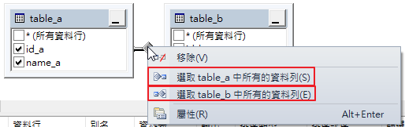

一、交叉合併
假設我們有一個測試資料庫，裡面有兩張資料表，並新增一檢視表利用圖形介面完成交叉合併

可以配合Shift鍵一次新增多張資料表

將table_a與table_b的所有屬性全部勾選，其功能相當於點選「*(所有資料行)」

後於上方工具列按下紅色驚嘆號執行SQL觀看執行結果
二、內部合併
承上例，將table_a與table_b的所有屬性全部勾選，其功能相當於點選「*(所有資料行)」
利用滑鼠左鍵將屬性id_a直接拖曳到id_b屬性內
拖曳完成後

來看執行結果
三、左外部合併
承上例，利用滑鼠左鍵將屬性id_a直接拖曳到id_b屬性內，但僅完成inner join
接著要在兩個資料表的關連線上面按右鍵，並點選「選取table_a中所有的資料列」
完成後如下圖

再來看執行結果

四、右外部合併
承上例，在兩個資料表的關連線上面按右鍵，並點選「選取table_b中所有的資料列」
完成後如下圖
再來看執行結果
五、完全外部合併
完全外部合併的作法就是left join與right join的聯集。
在兩個資料表的關連線上面按右鍵，並點選「選取table_a中所有的資料列」和
「選取table_b中所有的資料列」

完成後如下圖

再來看執行結果

六、多項關連性的設定
為了能夠更直覺體會多項關連性的設定，所以再舉個新例子
CREATE TABLE [dbo].[T02訂單]( [訂單編號] [char](5) NULL, [經手人] [nvarchar](10) NULL, [產品編號] [char](5) NULL, [單價] [int] NULL ) ON [PRIMARY] GO CREATE TABLE [dbo].[T02產品]( [產品編號] [nchar](10) NULL, [定價] [int] NULL, [產品名稱] [nvarchar](10) NULL ) ON [PRIMARY] GO -- dbo.[T02訂單] INSERT dbo.[T02訂單] VALUES ('00001', N'陳元元', 'P001 ', 30000) INSERT dbo.[T02訂單] VALUES ('00002', N'劉名', 'P001 ', 24000) INSERT dbo.[T02訂單] VALUES ('00003', N'林森木', 'P002 ', 12000) INSERT dbo.[T02訂單] VALUES ('00004', N'菜元園', 'P002 ', 15000) INSERT dbo.[T02訂單] VALUES ('00005', N'何壁珠', 'P003 ', 18000) -- dbo.[T02產品] INSERT dbo.[T02產品] VALUES (N'P001 ', 30000, N'冷氣') INSERT dbo.[T02產品] VALUES (N'P002 ', 15000, N'冰箱') INSERT dbo.[T02產品] VALUES (N'P003 ', 20000, N'洗衣機') INSERT dbo.[T02產品] VALUES (N'P004 ', 9000, N'微波爐') INSERT dbo.[T02產品] VALUES (N'P005 ', 850, N'電風扇')
先列出訂單中每一筆產品編號的產品名稱與定價的所有資料
目地為撈出訂單單價小於產品定價者
在兩個資料表的關連線上面按右鍵，並點選「屬性」跳到屬性視窗
再來看執行結果

七、自我合併
為了能夠更直覺體會自我合併，所以再舉個新例子
CREATE TABLE [dbo].[T03員工]( [員工編號] [int] NULL, [姓名] [nvarchar](10) NULL, [職稱] [nvarchar](10) NULL, [主管] [int] NULL ) ON [PRIMARY] GO --dbo.[T03員工] INSERT dbo.[T03員工] VALUES (1, N'陳元元', N'總經理', NULL) INSERT dbo.[T03員工] VALUES (2, N'劉名', N'工程師', 4) INSERT dbo.[T03員工] VALUES (3, N'林森木', N'工程助理', 2) INSERT dbo.[T03員工] VALUES (4, N'菜元園', N'工程協理', 1) INSERT dbo.[T03員工] VALUES (5, N'何壁珠', N'業務助理', 12) INSERT dbo.[T03員工] VALUES (6, N'劉逸萍', N'業務', 10) INSERT dbo.[T03員工] VALUES (7, N'陳臆如', N'業務協理', 1) INSERT dbo.[T03員工] VALUES (8, N'胡琪偉', N'業務', 10) INSERT dbo.[T03員工] VALUES (9, N'吳志粱', N'業務', 10) INSERT dbo.[T03員工] VALUES (10, N'林美滿', N'業務經理', 7) INSERT dbo.[T03員工] VALUES (11, N'劉雯', N'業務', 10) INSERT dbo.[T03員工] VALUES (12, N'張懷甫', N'業務經理', 7)
連續兩次加入員工資料表

我們會發現第二次加入的員工資料表會自動被加入新別名

我們目地想要找出員工的主管的姓名與職稱，因此整個自我合併的作法如下